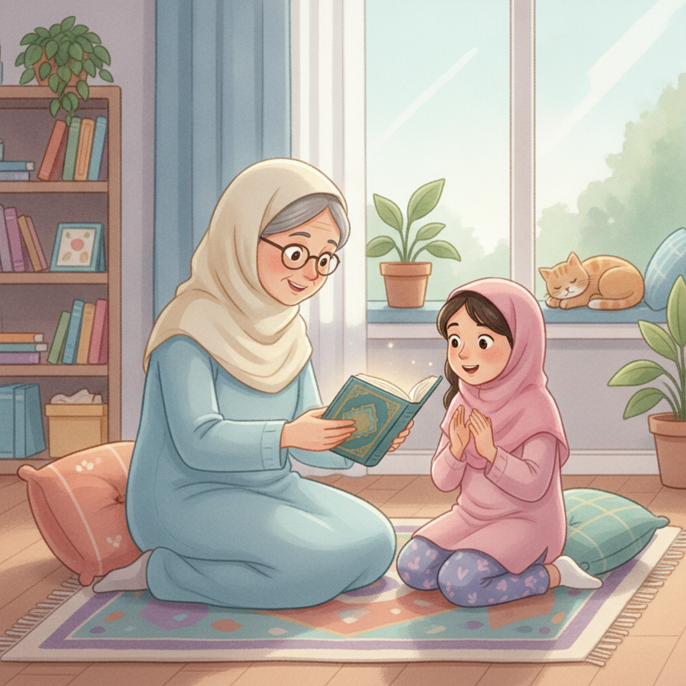

Le Coran, la Parole d'Allahالْقُرْآنُ كَلَامُ اللَّهِ
- Le Coran est la Parole d'Allah.
- Comment le toucher avec respect, en état de pureté.
- Découvrir les deux premières sourates : Al-Fâtiha et Al-Ikhlâs.
Un jour, Nour voit sa grand-mère tenir un livre avec beaucoup de précaution, comme s'il était précieux. « C'est le Coran, lui dit-elle, la Parole d'Allah. Elle a été donnée au Prophète ﷺ par l'ange Jibrîl. »
Le Coran, nous devons le réciter, le mémoriser et le mettre en pratique dans notre vie. Avant de le toucher, il faut être propre : on dit qu'on est Tâhir, c'est-à-dire en état de pureté.

الْحَمْدُ لِلَّهِ رَبِّ الْعَالَمِينَ
الرَّحْمَٰنِ الرَّحِيمِ
مَالِكِ يَوْمِ الدِّينِ
إِيَّاكَ نَعْبُدُ وَإِيَّاكَ نَسْتَعِينُ
اهْدِنَا الصِّرَاطَ الْمُسْتَقِيمَ
صِرَاطَ الَّذِينَ أَنْعَمْتَ عَلَيْهِمْ غَيْرِ الْمَغْضُوبِ عَلَيْهِمْ وَلَا الضَّالِّينَ
اللَّهُ الصَّمَدُ
لَمْ يَلِدْ وَلَمْ يُولَدْ
وَلَمْ يَكُنْ لَهُ كُفُوًا أَحَدٌ
Allah est le Seigneur de tout l'univers : Il mérite toute la louange, à chaque instant.
Al-Fâtiha est une vraie conversation avec Allah : je Lui parle avec mon cœur, pas seulement avec ma bouche.
Je la récite dans chacune de mes prières : c'est la sourate que je dis le plus souvent de toute ma vie.
Allah est Unique : Il n'a ni parent ni enfant, et personne ne Lui ressemble.
La réciter avec le cœur, c'est dire à Allah qu'Il est le plus grand amour de ma vie.
Je la dis le soir avant de dormir, pour placer ma confiance en Allah avant de fermer les yeux.
Tamponne tes deux premières étoiles sur ton Passeport des Sourates pour Al-Fâtiha et Al-Ikhlâs, après les avoir bien écoutées et répétées !
Al-Fâtiha est récitée à chaque unité de prière (rak'a) : c'est la sourate que tu répètes le plus souvent dans ta vie !
1. Qui a apporté le Coran au Prophète ﷺ ?
2. Que veut dire être « Tâhir » ?
« Le Coran est la Parole d'Allah : je le récite, je le mémorise, je le mets en pratique. »